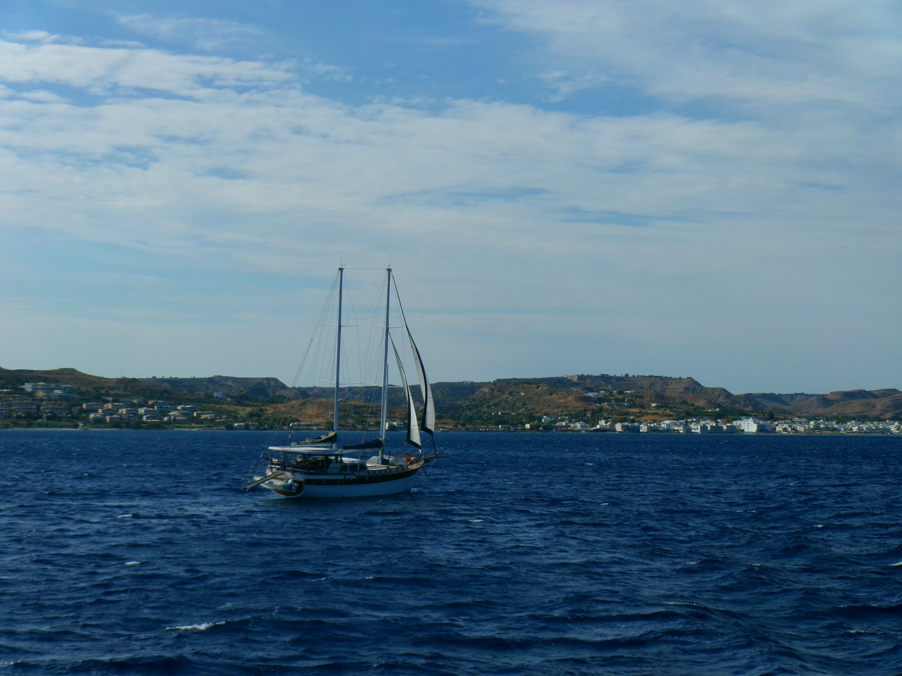

I am taking MEDPL 150 because I have always been interested in media and how different forms of it are created. Whether it's photography, movies, or videos on social media, I think it's interesting how people can use visuals to tell stories and express themselves. I have always enjoyed watching and interacting with different types of media, but I want to learn more about the work that goes on behind the scenes. I am especially excited to learn about photography, video editing, and how to use different creative programs. I think these are valuable skills to have, especially in a world where technology and media play such a big role in our everyday lives. Although I don't have much experience with visual arts, I am looking forward to trying new things and developing my creativity. I enjoy seeing how different creators use their own styles and ideas to make something unique. I am particularly interested in creators who make films and videos because of how they combine visuals, sound, and storytelling to connect with an audience. Throughout this class, I hope to become more confident in my creative abilities and gain a better understanding of how different forms of media are produced. Most importantly, I want to challenge myself and learn skills that I can continue using even after the class is over.
